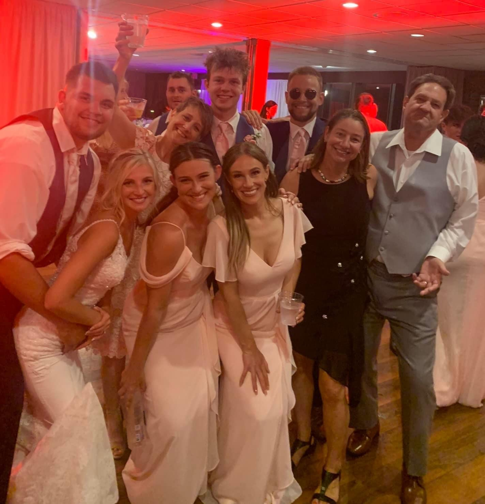

Something that is really important to my is my family.
Throughout the years I have learned that a strong relationship with your family is crucial for prolonged happiness.
Below is an image at my sister Maggie's wedding. The image shows:
Matt (wearing glasses) He is the oldest sibling of mine. He currently lives in St. Paul, Minnesota and has created his own production company which creates podcasts for local entrepreneurs.
Anne (holding glass of water) She is the 2nd oldest in my family. She currently lives in Aurora, Co and works at a National Park.
Catherine (left of Anne) She is the 2nd youngest in my family. Catherine works for March of Dimes, which is a nonprofit organization in Milwaukee. She recently was in charge or coordinating a large gala for funding.
Maggie (left of Catherine) She's the middle child and the picture was taken at her wedding! Maggie is a school teacher and lives in the Milwaukee area.
Anthony (left of Maggie) He is my sister's husband. Anthony loves to hunt and watch the Bucks on TV!
Dad (acting like a mobster) My dad has been working at Johnson Controls for over 30 years. He started as a technical writer and his hard work has allowed him to be promoted to an engineer.
Aunt Meg (next to my dad) My Aunt Meg is my mom's sister who is a nurse in San Diego. It was nice for her to visit for my sister's wedding.
Mom (arm around me) My mom works part time at Bath & Body Works. She is super loving and I can always go to her whenever I having a tough time in life.
